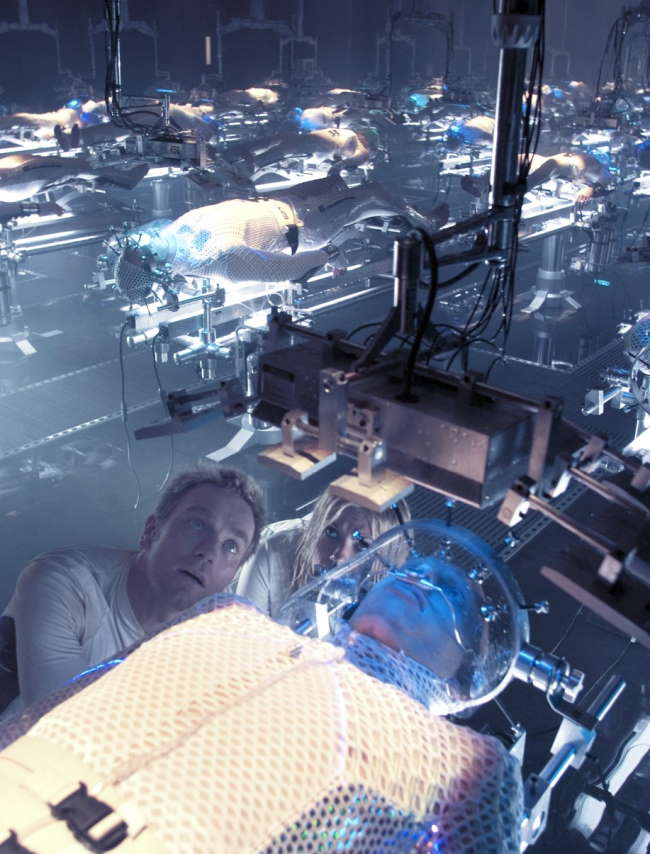
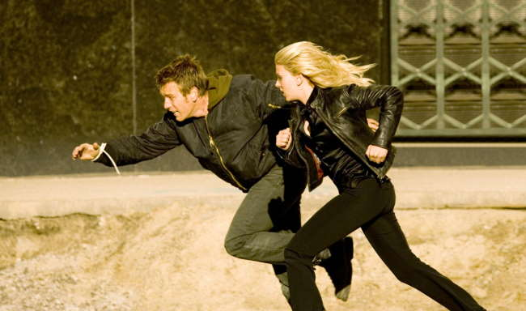
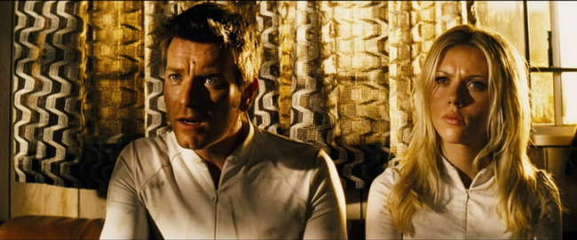
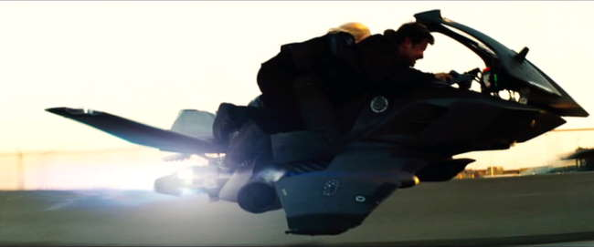
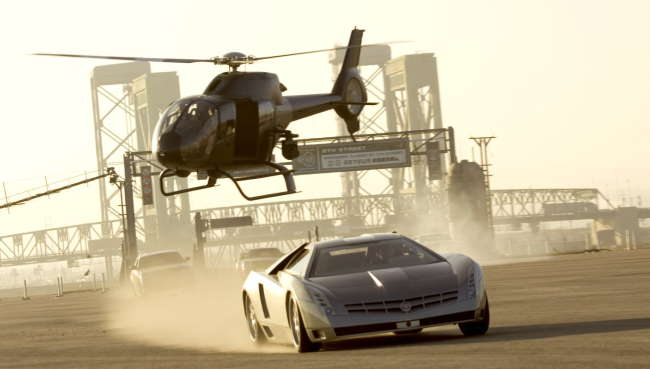
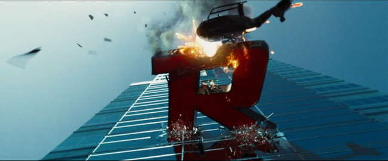
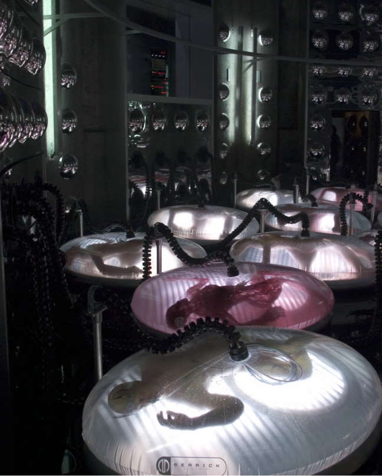

Movie review by : SFAM
Year : 2005
Directed by : Michael Bay
Written by : Caspian Tredwell-Owen, Alex Kurtzman & Roberto Orci
Degree of Cyberpunk visuals : High
Correlation to Cyberpunk themes : Medium
Rating : 5/10
Key cast members :

Overview: The Island is straight Hollywood fare from the get go. In this summer bubble gum scifi-action romp, you'll find few original ideas here, or even a coherent plot, but you will find loads of awesome visuals and even more action scenes and explosions. Vast amounts of money went into creating some rather incredible action sequences. Unfortunately, with all the thought devoted to creating those sequences, there apparently was little left for the story itself. Still, Scarlett Johansson looks absolutely gorgeous in The Island, and Ewan McGregor works as a leading man.

The Story: In the future, the desire among the rich and famous to live for ever dominates their existence. Along comes Dr. Merrick (Sean Bean) who founds the Merrick Corporation to meet this market need. The Merrick Corporation has (supposedly) found a method to take a person's DNA and clone all of their organs within a gelatinous blob that maintains a persistent vegetative state. Unfortunately, they were never able to make this work, so instead, the Merrick Corporation broke all the laws and went with straight cloning of their human sponsors. For a cool 5 million bucks, sponsors can buy an insurance policy to ensure they always have a perfect set of organs that can be harvested to save them from whatever malady arises.

To keep the clones under control, Dr. Merrick constructs an alternate reality where a contaminated world has killed everyone except for a few fortunate souls who were rescued and placed into a special set of buildings. They have also saved an Island, which is now the only place on earth where people can live without dying. Now all the clones await their turn in the lottery, which, if won, supposedly means they will be able to go to the Island. In reality, the clones are "selected" when their sponsor has need for one of their body parts. From their diet to their associations with others to their urine output, every aspect of a clone's life is monitored. THX-1138's surveillance society, right down to the oppressive white, is omnipresent in The Island.

Lincoln Six-Echo, played by Ewan McGregor, is a clone who starts questioning his surroundings. He eventually gets out (through a completely idiotic plot point) and realizes that that those who leave to go to the Island are in fact being murdered. He quickly goes back to get his close friend, Jordan Two-Delta (Scarlett Johansson) who just yesterday was selected to go to the Island (her sponsor is dying from wounds suffered in a car crash). Together, they make a break for it, but are pursued by (we are told) a crack-group of ex-special forces agents led by Djimon Hounsou. With the help of a low-level employee (Steve Buscemi) that Lincoln Six-Echo befriended, Lincoln and Jordan make for Los Angeles in an attempt to find Lincoln's sponsor to discover the truth. From there, The Island turns into a high-tech, futuristic chase movie, with continually larger explosions and action sequences dominating screen. I won't spoil the ending for you, but suffice to say this movie is as predictable as they come.

Michael Bay's Approach to Story Telling: It's pretty clear that director Michael Bay doesn't plan movies like most directors. He seems to pay FAR more attention to the visual progression than he does the actual dialogue. The narrative in Island, like most of his movies, simply doesn't hold together. To buy it, you have to accept all sorts of inane action on the part of the characters. Michael Bay seems to construct his movies via storyboards alone ? for instance, he knows that in the end, the hero and the bad guy need to fight on a high-tech, scary looking bridge with explosions going on in the background ? he is far less concerned about the rationale that brings them together. In watching it, the Island is one of those rare movies that is actually more coherent if you turn off the sound. The story you make up to go with the visuals will almost certainly make more sense then some of the plot points Bay provides.

I don't even mind that we have to accept that two clones, three and four years old, are able to outwit an entire platoon of ex-special forces personnel, or that they "magically" assume all of their cloned person's skills (like riding flying motorcycles). I can even accept that a supervisor on a regular basis, gives a clone a key that gets him to the outside world to save the supervisor from running errands, or that the the police regularly park their squad cars in the middle of an intersection and then don't look for broadsides, but some of the basic plot stuff really does bother me. In the Island, the cloning is a HUGE secret that implicates the entire corporation into illegal action, but none of the investors, including the Defense Department which as spent 120 Billion on this "technology", ask any questions. Even more incredible, none of the hundreds, if not thousands of low-level employees have ever consider spilling the beans. Instead, they are so closed-mouthed, they don't even tell their family members. Killing is cool for them, as long as they get to keep their meager paychecks. This is just one example ? far worse are the ending plotlines, which have our heroes assuming that top-notch special forces personnel wouldn't search them for weapons even after they've shot people (lucky for them, the special forces personnel complied), that hired thugs would hang out and watch their boss go mono-a-mono with the hero vice wasting our hero, and that the boss himself, up in the comfort of his office, would be able to make it to the hero far quicker than any of his hundred thugs who's job it is to enforce the peace.

Product Placement Gone Wild: It's kind of refreshing to know that in the future, all dehumanized clones have to wear Puma shoes and clothing, drink Aquafina, serve Ben & Jerry's Ice cream to kids, model for Calvin Kline on billboards, play Xbox, seek out MSN Search as a phone book, conduct their slave work on Apple computers, steal American Express credit cards, snag rides on Mac Trucks, wear Monza watches, and look longingly at Michelob Light beers. And of course, EVERYONE will be driving either Cadillacs or Dodge Magnums in the future. The Bond movies, where you expect significant product placement, don't hold a candle to the monstrosity that is The Island. Not only do we get an obscene number of product placements, the on-camera product "lingering" that Mr. Bay engages in is almost criminal. I felt like I should have gotten a discounted ticket due to the myriad of embedded commercials. It's rather amazing if you think of it ? that almost 70 years into the future, all these companies will still be using the same logos they use today. I must say though the product placements are very memorable ? they make be both remember the product and more importantly, they instill in me the STRONG desire to never buy these products again, as I now associate these brands as contributors to fucking up my movie watching experience.
The Visuals: While I've bashed the Island's plot, Michael Bay certainly deserves a lot of credit for delivering some pretty cool cyberpunk visuals. The clone development labs look pretty darn cool. Additionally, Michael Bay continually composes shots displaying wonderful color panoramas. We get gorgeous yellows and blues in a variety of textures and settings. In scene after scene, it becomes clear that while Bay isn't too concerned about the dialogue or narrative sequences, he's intimately involved in the look. In some cases though, the visuals, while impressive, make absolutely no sense ? the worst example being the weird eye-nanobots that are needed to take pictures of the brain activity. That its necessary to have metal insects entering the eye in order to take a brainscan 70 years into the future strains credibility far past the point of reason ? even worse, the brainscan cannot be processed until 48 hours!

The Action Sequences: Michael Bay is known primarily for his outrageous and visually impressive action sequences. He does not disappoint in the Island as the action is consistently top notch. We get awesome explosions, incredible chase scenes and lots of gun fire and fight sequences, all with wonderful camera angles and high quality positional surround sound. If there's one reason to definitely not miss the Island, it's the action sequences. Michael Bay may not be a great film maker, but he and his crew are genius at constructing creative, eye-poppingly tense action.

The Bottom Line: If there was one change I would make to the story, I would have suggested they had done away with the illegal nature of cloning (the second change would be to eliminate the magical memory transferral that happens between clones and sponsors). The Island would have worked far better if it portrayed a world were society as a whole had decided that cloned people were property. Instead, the Island practically ignores this question. But while I have a hard time suspending disbelief for the plot the Island provides us, I probably would have given it six stars, similar to a number of other Hollywood movies high quality visuals and significant plot issues. Unfortunately, the obscenely over-the-top product placement deserves at least the loss of one star. Not only are there over a dozen companies, the "linger" factor makes it clear that you've just paid to watch a commercial. In the end, this is simply asinine and reflects poorly on the studio (Dreamworks), the film maker (Michael Bay), and the products themselves (too numerous to mention). I would conservatively guess that the product placement easily cost the Island many tens of millions in lost revenue. The Island cost 126 million to make but only brought in 35 million, large part because virtually all reviews discussed the overbearing product placements. Word of mouth from viewers merely confirmed that if you pay to watch this in the theatre, you will be paying for commercials.